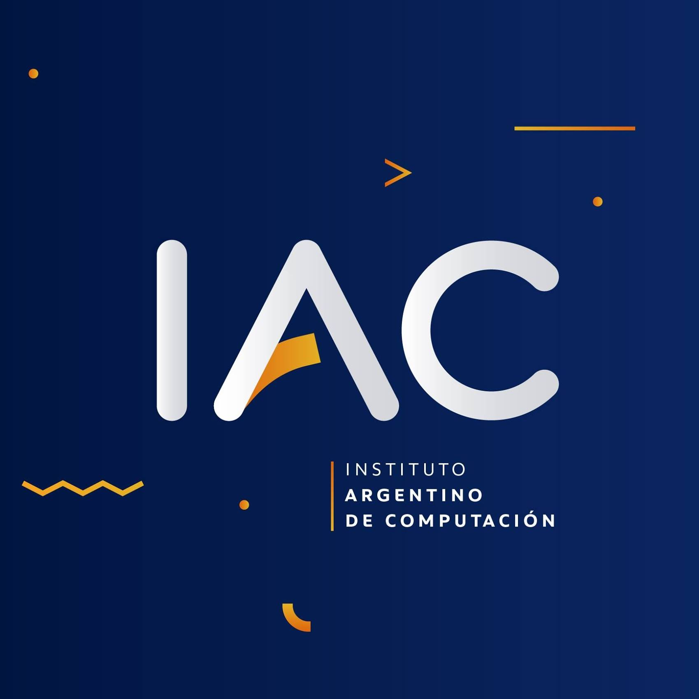

   <section class="row text-center my-5 py-5 bg-educacion color1" id="Educacion">

    <h1 class="title-lyric mb-5">EDUCACIÓN</h1> 

    <div class="col-sm-6 text-center">
      
    </div>
  
    <div class="col-sm-6 mp-0">
      <aside class="row-sm">
        <div class="d-flex align-items-start">
           
           <aside class="text-start">
            <h4 class="title-lyric">Nivel Secundario - Colegio SSTA</h4>
            <h6>(2016-2021)</h6>
            <h6>Promedio: 8.99</h6>
            <p>Institución educativa ubicada en la localidad de Grand Bourg que desde 1992 participa en la formación de niños y adolescentes, capacitando e instruyendo para brindar un futuro mejor</p>
           </aside>
        </div>
        </aside>
        <aside class="row-sm">
          <div class="d-flex align-items-start">
             
             <aside class="text-start">
              <h4 class="title-lyric">Instituto Argentino de Computación (IAC)</h4>
              <h6>CURSO DE EXCEL AVANZADO (2021)</h6>
              <p>Con más de 20 años de trayectoria y conformando la red de institutos más grande de Sudamérica, el IAC se ha consolidado como el mejor instituto de capacitación, desarrollando profesionales reconocidos y buscados en el mercado laboral.</p>
             </aside>
          </div>
          </aside>
      <aside class="row-sm">
      <div class="d-flex align-items-start">
         
         <aside class="text-start">
          <h4 class="title-lyric">Argentina Programa</h4>
          <h6>(2021-2022)</h6>
          <p>Argentina Programa se trata de un programa nacional y federal que tiene como objetivo capacitar a personas en lenguajes y conocimientos sobre programación, testing y habilidades digitales para potenciar la empleabilidad en el sector del software y la tecnología.</p>
         </aside>
      </div>
      </aside>
    </div>

  </section>